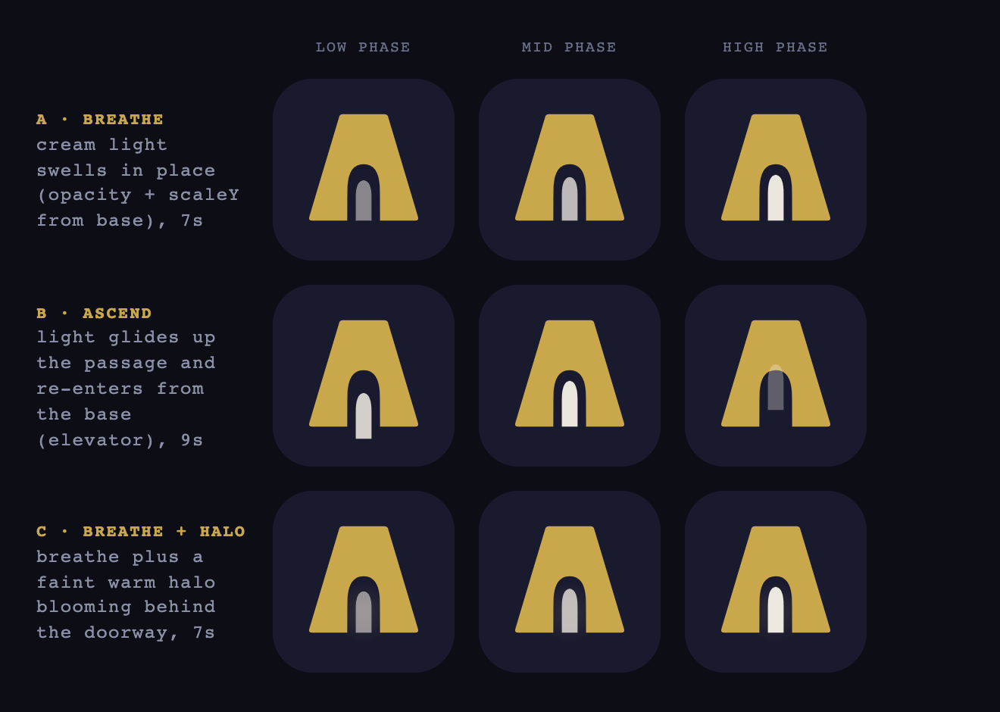

A matte-gold Art-Deco tower crowned by a keystone cornice, with a lit archway you
enter and one cream light that breathes (the soul). Chosen overnight by research →
three pixel-judged adversarial panels → a motion study, then refined after an adversarial design
review killed an "A"-letterform misread. Live behind
/lobby-pilot; nothing on main touched.
How it was decided. ~220-agent research compendium
(docs/research/IDENTITY-RESEARCH.md) → Phase 1 chose the symbol from 16 candidates →
Phase 2 chose the look + tech from 14 treatments → Phase 3 chose the motion/soul from a
filmstrip study. Every option was rendered to real pixels and judged at hero, 24px, and bare silhouette
by a 3-lens panel; the founder's taste call is recorded where I overrode the panel. Full trail:
docs/MORNING-REVIEW.md · spec: docs/MARK-SPEC.md.
Phase 1 · the symbol
16 candidates → The Keystone
The panel's raw winner was keyhole-tower (silhouette-strongest), but it reads
as an unmistakable keyhole = security/login app — a rootedness failure for an internship product.
I overrode to keystone (highest rootedness, architectural, no object misread). The panel's
pixel-judging correctly killed the weak ideas and the cliché controls.
Keysmith PANEL PICK
7.8
WINNER — only mark that wins lenses AND tops weighted math; silhouette 9.3, negative-space 'way in' never collapses, natural soul-light slot, most cha
The Keystone CHOSEN
7.1
Alt 1 — highest rootedness in field (7.7), truest architectural-whitespace primitive; aperture must be enlarged or the gate flattens to a play-button
The Crown runner-up
6.9
Alt 2 — dark horse; stepped deco silhouette and lit arched portal survived reduction robustly across all three lenses; slight ziggurat/busy risk at 24
The Monogram runner-up
6.4
Alt 3 — won brand lens on a crisp T, but soul-light vanishes below ~40px and reads as flashlight/mallet; cannot win on the brief's 24px-breathing-ligh
The Beacon
6.2
Most legibly 'tower' at hero but fails reduction — smudges to a vertical blob at 24px, beacon gone; meaning lens read it as a church. Stock-deco ownab
The Apex
6.0
Crispest silhouette but IS the up-arrow/ascent cliche the brief forbids; zero building metaphor, no negative-space entry, no soul. Disqualified by bri
The Summit
5.9
Clear ascent read but reads as tent/mountain at small size — wrong (outdoor) neighborhood; apex glow invisible in pixels.
The Ascent
5.6
Best on-metaphor motion (rising car) but static misreads as padlock/luggage-tag/keycard; horizontal window fights the vertical ascent.
The Seal
5.5
Three ideas stacked (ring+keystone+arch); collapses to a generic coin/medallion at 24px. Low premium-per-pixel.
The Keystone Gate
5.4
Disqualifying object misread — reads as a drinking glass/tumbler/shopping bag; the cleaner 'keystone' serves this idea better.
The Threshold
5.3
Threshold intent on-brief but silhouette inverts to headphones / horseshoe-magnet at every size. Eliminate.
The Lodestar
5.3
Star cliche the brief warns against; reads as an Oscar/trophy, no building metaphor, dissolves to dot-on-a-stick at 24px.
The Arrival
5.2
On-metaphor nav gesture but rounded panels read as a closed book/folder; the light sliver — its whole concept — is invisible below ~40px.
The Climb
4.5
Fatal — indistinguishable from a hamburger-menu/list icon at every size. A brand mark cannot read as a system control. Eliminate.
The Pillar
4.5
Clean 'architectural inverse' concept but reads definitively as a takeaway coffee cup; the object misread inverts the premium intent. Eliminate.
placeholder
The Lit Window
2.8
No submission (SVG placeholder); purest soul concept but unjudgeable and, on reconstruction, under-reads to a dark rectangle. Needs a different carrie
Phase 2 · look + tech
14 treatments → Negative-cut
The winner makes the doorway a true negative-space cut (survives bare silhouette)
with a cream light-pillar as the soul. Tech: inline SVG, no filters at rest, gradient/halo reserved for
the active state. The research-predicted "cheap on navy" controls (glass, holographic, soft-emboss) all
lost on the pixels.
Keystone — Negative-Space Cut CHOSEN
8.8
WINNER — keystone + true neg-cut pointed-arch doorway + literal cream soul-light; survives hero/24px/grayscale/bare silhouette; only mark #1 on all th
Solid+Monoline Hybrid (control) runner-upcontrol
8.2
Alternate 1 — safest favicon-grade: gold body + navy-keyline cream doorway, flawless at small color size; soul is flat fill and softens in pure mono s
Flat + Lit Facade runner-up
7.9
Alternate 2 — refined warm glow welling up the threshold; best as the ACTIVE/hover treatment OF the winner, since its gradient does work the brief res
Flat Matte Deco — The Keystone runner-up
7.7
Alternate 3 — purest matte-deco geometry, ship-trivial; but NO soul-light and the triangular counter misreads as a letter 'A'/delta — needs the cut+cr
Keystone — Monoline
7.3
Secondary/wordmark only — elegant blueprint line, but soul absent and thin strokes go fragile/wireframe sub-32px; inner arch risks a figure/keyhole re
Engraved Intaglio
6.7
Splash/large-format only — most 'expensive certificate' at hero, but soul-light gradient is INVERTED (dark-top), and hairline intaglio muddies to a bl
Faceted Deco Keystone
6.6
Marketing/hero variant — gorgeously gem-cut deco, but filled passage collapses to a solid trapezoid in silhouette and facets risk dating; weak as the
Matte + Active Breath
6.4
Reject as delivered — clean neg-cut but static state has NO light (empty doorway = no soul); humped top/splayed legs drift toward an inverted-U / hors
Keystone — Tone-on-Tone
6.1
Hero/active illustration only — beautiful Apple-spatial navy-on-navy mood, but FAILS at 24px: 1.4px outline + navy face collapse into the tile; silhou
Metallic Gold Ramp — The Keystone
5.4
Reject (control) — faux-3D chrome with a steel-blue stop reads tarnished/Web3; filled passage goes solid (doorway gone) at 24px. Heavy-chrome reads ch
Seal-Framed Keystone
5.4
Reject — borrowed 'official seal' ring dominates and dissolves to a fuzzy coin/donut at 24px with a detached glow-orb; framing belongs on the chrome,
Holographic Foil (control) control
4.7
Reject (control) — rainbow iridescent reads gamer-RGB/NFT, breaks navy-gold-cream, and evaporates entirely in grayscale; reserve at most a whisper for
Glassmorphic (control) control
4.4
Reject (control) — translucent cool-blue shell vanishes on navy and the glow bursts past the base (rocket/lamp misread); silhouette-unsafe (3.7). Glas
Soft Emboss (control) control
4.3
Reject (control) — neumorphic blur is the worst small-size performer; collapses to an indistinct gold blob at 24px. SVG filters are the 24px killer —
Phase 3 · motion / soul
The light breathes — the body stays still
Three idle characters, each shown at low/mid/high phase so the motion range is visible.
Chosen: Breathe (calmest, silhouette-stable). The gold body never moves; all life is in the light.

The ship-gate
Reads at 24px, in grayscale
The locked mark at hero / favicon-24 / 24→120 / grayscale / silhouette — the founder's
eyeball test for the favicon.